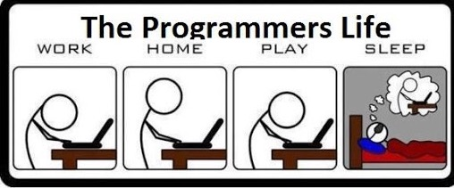
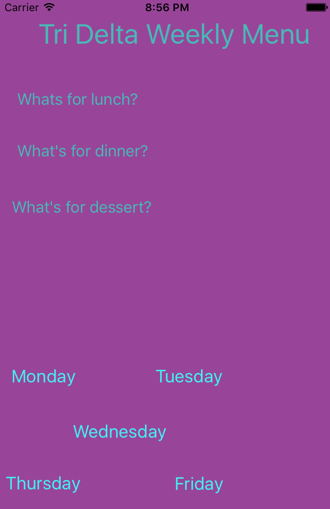

Projects

dianaakrami.com
This website is actually my first project! I don't really know much HTML, CSS, or JQUERY, but I've definitely gotten better as this site gets closer to being finished. I'm having a really good time building it! My favorite part is the random fact generator on my home page (just click "Diana Akrami" in the upper left hand corner if you want to check it out!). I'm going to be adding some other cool additions, so be on the look out!
Tri Delta Manager (In Development)
 To make my life slightly easier, I decided to make an iOS app that informs me what's on the menu at my sorority house. It's my first iOS app, and I eventually want to add more features to it, such as notifications for events, a calender, important announcements, and more. I want to add more designs to it as well, but for now it does tell me what's on the menu! I'm learning Swift as I make the app. It isn't something I'm going to be advertising and planning to get rich with, but it's a pretty fun introduction to Swift and iOS for me.